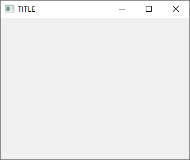

os
這模組功能太多了，根本就是一套 DOS 或 Shell，示範不完。推薦查 RUNOOB.COM 整理的《Python OS 文件/目录方法》常用一覽表，或直接翻《16.1. os — Miscellaneous operating system interfaces》比較實際。
作業系統
| os.name | 作業系統名稱 |
| os.cpu_count() | 處理器核心數 |
| os.getlogin() | 登入者帳號 |
| os.putenv(key, value) | 加入環境變數 |
| os.getenv(key) | 取得環境變數 |
| os.unsetenv(key) | 移除環境變數 |
資料夾與檔案
os 雖然提供檔案系統的功能，但並不完善，所以要搭配 shutil 或其它模組。
| os.sep | 資料夾階層符號 / 或 \ |
| os.linesep | 換行字元（CR、LF） |
| os.mkdir(path) | 建立資料夾 |
| shutil.copytree(src, dst) | 複製資料夾 |
| shutil.rmtree(path) | 刪除資料夾 |
| shutil.move(src, dst) | 移動或改名資料夾或檔案 |
| os.chdir(path) | 切換資料夾 |
| os.getcwd() | 顯示現在所在資料夾 |
| os.listdir(path) | 顯示資料夾和檔案 |
| os.walk(path) | 顯示子資料夾和檔案 |
| open(file, 'w') | 建立檔案 |
| shutil.copyfile(src, dst) | 複製檔案 |
| os.remove(path) | 刪除檔案 |
| os.stat(fd) | 顯示檔案訊息 |
| os.path.getsize(path) | 取得檔案大小 |
| os.path.abspath(path) | 取得完整路徑 |
| os.path.dirname(path) | 取得不含檔案名稱的路徑 |
| os.path.splitdrive(path)[0] | 取得磁碟機代號 |
| os.path.basename(path) | 取得檔案名稱 |
| os.path.splitext(path)[-1] | 取得副檔名 |
| os.path.join(path, *paths) | 合併路徑字串 |
| os.path.exists(path) | 檢查檔案或資料夾是否存在 |
| os.path.isdir(path) | 檢查是否為資料夾 |
| os.path.isfile(path) | 檢查是否為檔案 |
| glob.glob(path, times) | 按匹配規則取得資料夾和檔案 |
| os.utime(path, times) | 設定修改與存取日期 |
直接調用作業系統指令工具
從其它程式語言跨過來 Python 的人，經常看不起這個模組功能，覺得調用作業系統指令沒尊嚴，非得用程式設計的方式完成任務才行。但 Python 的精神就是：「這個模組超好用，很多工作用這個功能就能完成，而且很有效率。」所以別想太多，放手去用吧！
Python 是表述語言，用 os.system() 呼叫系統指令，在第一時間解決問題，同時又確保功能正常，是很自然而然的編程手法。爾後再找時間查看看有沒有模組可用，屆時再改寫。例如想設計修圖軟體，如果電腦已經有 ImageMagick 工具程式可調用，那就不見得要安裝 Pillow 模組。
表述語言（scripting language）就是隨手抄寫一段程式碼來跑的語言，不必用傳統程式語言嚴肅的態度，隨時都拿開發軟體的精神寫程式。放鬆心情，好好享受程式寫作的樂趣。無論為誰工作寫程式，你總能為自己寫 Python，而不是只為公司寫 C++ 或 Java，這就是它與眾不同的地方。
sys
sys 模組用來操作直譯器，進階一點的可以關閉某些直譯器的功能，基本一點的就是取得平台參數。
取得指令參數
沒有輸入參數的話，會顯示 IndexError: list index out of range 錯誤，所以使用前應檢查資料長度。檢查時，因為 sys.argv[0] 已經放原始碼的檔名，所以 sys.argv 長度至少是 1。於是程式碼寫起來就像…
假設將上面程式儲存為 sample.py，然後在命令提示字元輸入 python sample.py hello：
由於要處理的細節很多，所以真要仰賴指令參數來操作程式的話，應找第三方模組掛載來用。
使用的作業系統
即使是 64 位元的 Windows 10，Python 還是取名為 win32。所以想判斷哪種作業系統時，建議使用檢查開頭是否符合字串的 startswith()，這樣只要檢查是否為 win 開頭就好，不然 if sys.platform=='win32' 感覺過時了。
使用的 Python 版本
ctypes
ctypes 讓 Python 可以支援 C 語言程式設計，像是資料型態的相容與轉換、系統底層信號的獲取與聯繫、程式庫的調用。
尤其 ctypes 底下的 windll，直接提供 gdi32、kernel32、ole32…琳瑯滿目的 Windows 動態連結程式庫，當 Python 的功能不足，無法解決問題時，除了下載第三方模組外，就是深入研究 ctypes 了～
調用 Windows 系統能力播放 MP3 格式音樂
這只是範例，如果需要播放 MP3 等各式音樂，應使用專人設計的模組。
由於 Python 不支援播放 MP3 格式音樂的能力，所以示範如何藉由 ctypes 調用 Windows 系統播放音樂的能力，不是真的要你這樣播放音樂。
推薦使用 PyPI 上的 playsound 模組，這模組除了可用 pip 安裝外，也可直接下載解開，跟你的原始碼放在一起使用，而且還跨平台！
載入其它 DLL 檔調用程式功能
底下調用 libui.dll 裡面的 uiInit()、uiNewWindow()、uiControlShow()、uiMain() 等程式功能，寫個視窗來跑。由於同時示範了結構、指標和轉型，所以看不懂的話，只看高亮度標示起來的程式即可，知道怎麼調用 DLL 裡面的程式就好：

如果調用的 DLL 是 Windows 專用，改用 ctypes.windll.LoadLibrary() 載入。
ctypes.cdll.LoadLibrary() 和 ctypes.windll.LoadLibrary() 各有別名 ctypes.CDLL() 和 ctypes.WINDLL() 可代替。
time
time 模組用來產生 timestamp 和 time.struct_time 兩種時間格式，適合處理 POSIX 時間，並且表示為 UTC 時間。
取得現在日期與時間
執行結果隨電腦時間不一樣，我的情況是：
產生時間與時間轉換
POSIX 時間是 UNIX 作業系統計算時間的方式，以 UTC 時間 1970 年 1 月 1 日 0 時 0 分 0 為基準，累加或累減的總秒數，在 Python 稱為 timestamp。以秒數為單位的話，時間就能以整數表示1，較方便對時間進行十進制的四則計算：「946753440 秒加 93784 秒，比 2000 年 1 月 2 日 3 點 4 分 5 秒加 1 天 2 小時 3 分 4 秒好算多了。」因此成為現在電腦表示時間的標準做法。
但用總秒數表示時間只是方便電腦計算而已，不方便人類表示時間，例如 665251200 秒是幾月幾日幾點幾分？所以從電腦取得的時間，還是得轉換成人類習慣的時間表示法才行。Python 使用 time.struct_time 保存 UTC 時間（世界協調時間），把時間分為天、時、分、秒，採用格里曆計算年份。
格式化輸出時間
透過格式化字串的參數，可以簡化取得日期與時間的寫法：
執行結果隨電腦時間不一樣，我的情況是：
要打中文的話，必須載入 locale 模組，用 locale.setlocale(locale.LC_ALL, '') 清除直譯器的地區與語言設置，否則格式化字串時無法解碼中文。往後遇到中文亂碼問題，也用這招解決。
更多格式化參數如下：
| %a | 英文星期縮寫。 |
| %A | 英文星期名稱。 |
| %b | 英文月份縮寫。 |
| %B | 英文月份名稱。 |
| %c | 直接套用直譯器默認的在地化日期與時間。 |
| %d | 日，01 到 31。 |
| %H | 時，00 到 23。 |
| %I | 時，01 到 12。 |
| %j | 一年的第幾天，閏年的關係，從 001 到 366。 |
| %m | 月，01 到 12。 |
| %M | 分，00 到 59。 |
| %p | AMP 或 PM。 |
| %S | 秒，閏秒的關係，可從 00 到 61 秒。 |
| %U | 一年的第幾週。 |
| %w | 星期，星期日是 0。 |
| %W | 一年的第幾週。 |
| %x | 直接套用直譯器默認的在地化日期。（不見得與作業系統的在地化一致） |
| %X | 直接套用直譯器默認的在地化時間。（不見得與作業系統的在地化一致） |
| %y | 年，00 到 99。 |
| %Y | 年。 |
| %z | 時區，例如台灣是 +0800。 |
| %Z | 時區名稱，例如台灣是台北標準時間。 |
| %% | 輸出 % 符號。 |
格式化剖析時間
沿用格式化字串的參數，可以更簡單產生日期與時間：
由於預設的參數是 %a %b %d %H:%M:%S %Y，所以懶得下參數，只照字串格式寫也可以：
要說 strptime 與 strftime 的差別，一個是產生時間用的，所以傳回的是 time.struct_time 物件，一個是輸出時間用的，所以傳回的是字串。
datetime
datetime 模組設計了 time、date、datetime、timedelta、tzinfo、timezone 等物件，適合計算日期與時間，以及處理時區的問題。
表示日期與時間
計算日期與時間
datatime 轉 timestamp 和 time.struct_time
calendar
改成 calendar.calendar(2016) 則是年曆。
random
每次執行結果不一樣，我的情況是：
re
re 是 regular expression 的縮寫，它有獨特的語法可以描述「規則」，例如 (abc) 表示 abc，[abc] 表示 a 或 b 或 c，a{3} 表示 aaa，a{2, 4} 表示二到四個 a，.{5} 表示任意五個字元…，原本要用十幾行程式來比對字串的資料，用 regular expression 可以一行搞定。缺點是很難看得懂在寫什麼。
本節只介紹 re 模組的功能，更多 regular expression 語法，請參考《Regular Expressions》。
用 re.search() 比對資料
比對到資料，會傳回落落長不曉得是什麼訊息的東西，其實這是 MatchObject 物件。
比對不到資料，則傳回 None。
有傳回物件的話，if 會判定為 True。None 的話，if 判定為 False。只想檢查有沒有資料時，就夠功能設計出來了：
對 MatchObject 的操作
接著來看怎樣處理 MatchObject 物件。我們看到上面範例輸出結果，有個 span=(0, 3)，這是所找到資料的位置，還有 match='abc'，這是所找到的資料，可分別用 span() 和 group() 取出：
既然比對不到資料會傳回 None，就表示有可能不是 MatchObject 物件。既然不見得是 MatchObject，直接對 re.search() 操作 span() 不就程式錯誤了！所以…
這樣就不會在比對不到資料時，把 None 當作 MatchObject 操作了。
用 re.match() 比對開頭資料
雖然 regular expression 就有用 ^ 表示開頭的語法，但 ^ 放在集合中卻是 not 的意思，所以有些人會改用 re.match() 比對開頭資料，讓 ^ 只用來表示 not：
sqlite3
Python 內附 SQLite 這款資料庫管理系統，因此我們無須安裝任何資料庫，就能在 Python 用 SQL 管理資料：
一路用 connect.execute() 下 SQL 指令而已，如果你會 SQL，就會覺得這模組既簡單又好用！需要管理大筆資料、或者資料項目很複雜，就可以派上用場。
資料庫又容易備份，把 sqlite.db 檔案複製起來就好，非常好管理。
如果你不會 SQL，建議學起來，有些進階的資料結構與演算法，是可用 SQL 語法實現的哦！屆時就能用 sqlite3 模組提升資料處理的效率。
csv
CSV 是 Comma Separated Values 的縮寫，一種透過分隔符號，將資料寫在純文字文件，就能當資料表用的格式。由於規則簡單、格式輕巧，易輸入也易讀取，在還沒有 XML 和 JSON 時，CSV 是非常廣泛使用的資料格式。由於沒有標準規範，每個人都能依自己喜好修改 CSV 的表現方式，所以到現在還是很受用。
sample.py
pickle
Python 可將程式裡的資料，寫入到檔案裡面保存，以便隨時從檔案讀取出來還原資料，也就是所謂的序列化（serialization）：
json
JSON 源於 JavaScript，一種將物件表現為 object literal 後字串化，然後透過 eval() 將字串化的 object literal 還原成物件的技巧，也就是把物件變成字串，再從字串還原物件。
由於跨平台傳輸資料時，字串是相容性很好的資料格式，於是 JSON 成為傳輸物件資料的熱門格式。而且 JSON 比 XML 輕巧，正取而代之成為傳輸資料的標準格式！
然而 Python 物件不像 JavaScript 物件統一使用 {} 做為 object literal，而是不同物件有不同 literal，例如 list 是 []，set 是 ()，dict 是 {} …其實也沒有物件專屬的 literal。最後 Python 以語法相近的 dict 來容納 JSON 資料。
首先要知道一點，轉出來的 JSON 是個字串！前面說過，字串是相容性高的資料格式。
接著要知道的是，輸出的 JSON 資料，None 變成 null，True 變成 true，也就是轉為 JavaScript 的值，畢竟是 JavaScript Object Notation。
將 JSON 字串還原成新的 dict 後，字串裡面的 JavaScript 值又轉為 Python 的值。
既然 JSON 是字串，那用 open() 很容易能保存到純文字檔，改天再從純文字檔讀取字串，還原成 dict 物件在 Python 中使用，很有趣吧！
xml.etree.ElementTree
雖然 Python 有內建 DOM 與 SAX 模組可用，但官方認為這兩項技術在效率上有瓶頸，因此自行研發了 ElementTree，可以更有效率剖析 XML 檔案。
除非被要求使用 DOM 寫 XML 程式，否則在 Python 建議使用 ElementTree XML API。
sample1.py
sample2.py
輸出後並未排版，ElementTree 也沒辦法做到，要搭配 minidom 才行。
sample3.py
SQLite、JSON、XML 的使用時機
1. 在用戶端保存需要大量處理的資料時用 SQLite。
2. 點對點傳遞物件狀態、或跨平台同步資料時用 JSON。
3. 想將資料與程式切割開來時用 XML。
Pickle 是 Python 的資料序列化檔案格式，跨程式傳輸資料不方便。CSV 是 20 世紀 70 年代的產物，可被 JSON 和 XML 取代。因此兩者不在比較之列。
tarfile, gzip, bz2, lzma
tar 源自於 UNIX，原意是 tape archive（磁帶檔案庫），能將多個檔案轉成線性化的資料結構，好保存到磁帶。後來磁碟時代來臨，磁軌檢索的檔案存取模式，讓大家漸漸忘了 tar 原本是用來把檔案儲存到磁帶用的，只知道它能把多個檔案打包成線性結構的一個檔案，變成了打包用的工具。
gzip 是 GNU Project 推出的檔案壓縮工具，用來取代 UNIX 有專利限制的 compress 工具。由於 GNU 草創時有個精神，就是善用已存在的套件，不要重複造輪胎，所以 gzip 只能壓縮檔案，不能打包檔案：「打包已經有 tar 了。」
於是早年玩 Linux 時，經常看到 *.tar.gz 的副檔名，就是先把多個檔案 tar，再對它 gzip。
後來出現壓縮率更好的 bzip2 和 xz，gzip 已不再是 GNU/Linux 主要的壓縮格式。但為了相容舊機器，GNU/Linux 開放下載的程式，還是會另外提供 gzip 的檔案，能見度很高。
zipfile
Phil Katz 設計的 PKARC 軟體，因為侵犯了 System Enhancement Associates 公司的 ARC 專利，於是在 1989 年重新開發出 PKZIP，使用自己發明的 Deflate 無損壓縮演算法，還將格式免費開放使用，成為廣受歡迎的壓縮格式。1991 年，Nico Mak Computing 為 PKZIP 提供了直覺好用的圖形化介面，名為 WinZip，以共享軟體釋出，成為 Windows 時代每個人必裝的壓縮軟體，造就現在流傳最廣的壓縮格式。
雖然隨著時代的進步，ZIP 格式已是落後的壓縮技術，但流傳最廣的關係，若不著重壓縮比率，只要求能把檔案快速壓縮成一個封裝檔案時，還是會採用 ZIP 格式，例如看漫畫軟體的 *.cbz、LibreOffice 的 *.odt、Java 的 *.jar，其實都是用 ZIP 格式的壓縮檔。
base64
Base64 是一種能將二進制資料用 ASCII 字元編碼的演算法，常見的用途像是：上傳資料時將檔案路徑編碼，被攔截時除非解碼否則看不出是什麼資料夾和檔案。或者將圖檔轉為字串後，直接放在網頁裡面解碼，等於把圖直接嵌入網頁中。
文字
在文字編碼部分，必須是 ASCII 字元，且要轉為 byte，所以不但英文字串前要加 b，中文字串後要用 encode()，有點麻煩：
logging
對動態型別表述語言的 Python 來說，使用 *.log 檔案紀錄程式執行的動向，可事後獲得靜態型別檢查般的好處，藉由追蹤程式執行的動向，找出問題的環節在哪。
為程式寫日誌，就像寫程式要宣告資料型態屬於麻煩的差事，所以你不必因為 Python 內建 logging 這套好用的模組，就覺得寫程式非得用它嚴密監控程式不可。只在你的程式必須維持品質時再寫就好。
logging 模組可以紀錄不同層級的日誌：
| logging.debug() | 除錯追蹤時紀錄日誌。 |
| logging.info() | 正常運作時紀錄日誌。 |
| logging.warning() | 操作錯誤時紀錄日誌。 |
| logging.error() | 程式故障時紀錄日誌。 |
| logging.exception() | 跟 error() 同樣層級，外部檔案故障時用。 |
| logging.critical() | 災情發生時紀錄日誌，例如會員資料全毀那種慘狀。 |
| logging.log() | 先設定層級，再紀錄日誌。 |
然後在 logging.basicConfig() 中，給 level 參數如下的設定值，決定要留下哪些層級的紀錄：
| logging.DEBUG | 紀錄所有層級的日誌。 |
| logging.INFO | 不紀錄 DEBUG 層級的日誌。 |
| logging.WARNING | 不紀錄 INFO 層級的日誌。 |
| logging.ERROR | 不紀錄 WARINIG 層級的日誌。 |
| logging.NOTSET | 不紀錄所有層級的日誌。 |
看個實際範例吧：
sample.py
pdb
Python 的除錯器設計成模組來使用：
進入除錯模式後，最基本的操作方式是：
| l | 檢視程式碼。 |
| n | 執行程式，並跳到下一行。 |
| p 變數名稱 | 檢視變數。 |
| q | 離開 dpb 模式。 |
遇到函式時：
設定中斷點：
| b 程式碼行數 | 設定中斷點。 |
| c | 執行程式到中斷點停止。 |
除錯器是很常用到的功能，卻經常要寫 import pdb; pdb.set_trace() 的醜程式碼使用，所以 Python 3.7 起內建 breakpoint() 函式代勞。